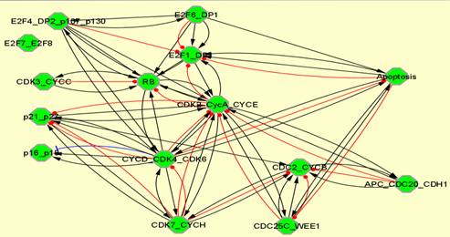
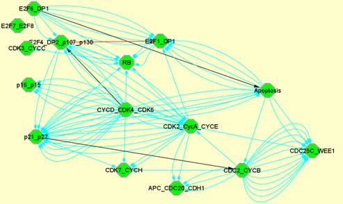
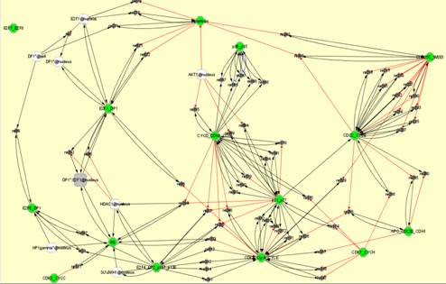

Disentangling retinoblastoma protein network using BiNoM
Based on the literature, we built a detailed network of the RB/E2F pathway.
The associated Cytoscape session for this example (RB_manual.cys) is available on BiNoM website: http://bioinfo-out.curie.fr/projects/binom/ where a manual on how to use BiNoM can be found as well.
We propose here to describe the steps leading to the semi-automatic decomposition of the comprehensive network. This is one way of getting modules using BiNoM but we do not pretend to present a strict method.
- Import the model in Cytoscape
Plugins => BiNoM I/O => Import CellDesigner Document from file
Choose the file: RBPathway.xml
- Prune the graph
To facilitate the study and the modular decomposition, we propose to work on the central cyclic part of the network. For that, we need to isolate it from the rest of the diagram:
Plugins => BiNoM Analysis => Prune the graph
The network is then divided into three graphs: the input (RBPathway.xml_in: proteins that are already present), the output (RBPathway.xml_out: proteins that are degraded or complexes that are not further modified), and a central cyclic part (RBPathway.xml_scc). We acknowledge that the model is not complete and that the input and output graphs would be minimized if the map were more detailed.
- Get Material Components, or Get Cycle Decomposition
Depending on the studied diagram, it will be easier to decompose the graph either into components or into cycles. We show here how the material component decomposition isolates the different modules from the strongly connected component graph (RBPathway.xml_scc):
Plugins => BiNoM Analysis => Get Material Components
This function isolates subgraphs in which each component is involved. It provides some kind of life cycle of an individual protein, or more specifically, its modifications along the cycle.
29 subgraphs are obtained. Before analyzing the subgraphs, we propose to cluster the graphs with respect to a high percentage of similarities. For that, we select the 29 subgraphs and set the percentage to 30% of similarities among diagrams.
Plugins => BiNoM Analysis => Cluster networks
The 29 subgraphs are clustered into 7 sub-networks that we rename according to the elements composing the sub-networks:
CYCD1_CDK4_p27Kip_p21Cip, CYCD1_CDK6_p27Kip_p21Cip, p53_MDM2, CYCE1_CDK2_CYCA2, CDC2_CYCB1_WEE1_CDC25C, CDH1, and one last one that we decompose further into three sub-networks: E2F1_DP1, E2F4_DP2_p130_p107, RB using, this time, the cycle decomposition (15 cycles obtained that we group into 4 clusters, 2 of them merged into one module).
- Re-introduce input and ouput
Now that the core of the modules is given, we propose to re-introduce the components from the input and output files that were ignored so far.
Plugins => Merge networks
Each module is merged with the two IN and OUT files and only the connected parts are kept. The rest is deleted. However, merging these IN and OUT parts back into each module requires manual curation: since the network is highly connected, a lot of components that are not disjoint will have to be selected carefully and deleted. For this purpose, the reorganization of the network with the organic layout becomes very useful as the highly connected components are often gathered as clusters.
- Compare the union of the modules with the initial file
All the obtained modules are merged into one big file and compared to the initial diagram RBPathway.xml. The comparison shows the elements that were not included in the modules and need to be replaced in the appropriate modules. This comparison checks at this point the omitted parts and isolates the modules that remain to be created. For example, in our example, three modules that were not in the cyclic part could be formed from what remained: E2F6_DP1, CDK3_CYCC, CDK7_CYCH.
- Refine the networks
The modules are separated or merged according to the choices made by the modeller. We proceed to a more refined decomposition of the existing individual modules using similar methods, either cycle or component decomposition. New modules were chosen. CYCB1_CDC2_WEE1_CDC25C was divided into two modules: CYCB1_CDC2 and WEE1_CDC25C and CYCD1_CDK6_p27Kip_p21Cip and CYCD1_CDK6_p27Kip_p21Cip were merged and divided into three modules: CYCD1_CDK4_CDK6, p16_p15 and p27Kip_p21Cip.
Method: To select specific nodes, for example WEE1 and CDC25C in CYCB1_CDC2_WEE1_CDC25C, we chose: Select => Nodes => By Name and in the dialog window, we wrote first *WEE1* (the * selects all the species in which WEE1 appears) then *CDC25C*. To select the reactions associated with the proteins: Select => Nodes => First neighbors of selected nodes and finally using BiNoM features: Plugins => BiNoM Utilities => Select Edges between selected nodes. The next step is simply the creation of a new network from the selected nodes and edges: File => New => Network => From selected nodes, all edges. Finally, the resulting network is renamed.
- Create a modular view of the network.
From the modules obtained with the described method, we can automatically generate the modular view of the initial network. We choose the BiNoM CellDesigner visual style and the resulting network can exhibit three different types of information (see section 2.2):
(a)
(b)
 (c)
Legend: Modular views of RB/E2F network showing (a) simple molecular connections existing between modules,
(b) modules that share molecules or reactions and (c) explicit connections between modules.
Note that the modules obtained here might slightly differ from the ones presented on RB/E2F website. If the resulting diagrams are very similar, the final outcome of BiNoM decomposition may not be unique since the refinement of the modules is left to the modeller.